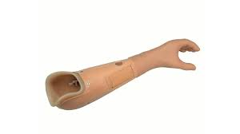
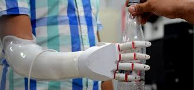
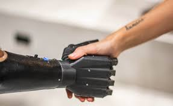
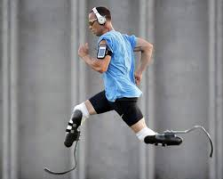

Una prótesis es más que una parte artificial del cuerpo. Es una mezcla de ciencia, tecnología y esperanza, que ayuda a miles de personas a recuperar su independencia, su confianza y sus sueños. Estas pueden ser externas (como prótesis de miembros o dentales removibles) o internas (como implantes dentales o prótesis mamarias).
Objetivos de las prótesis
- Reemplazar una parte del cuerpo que falta: sustituir una extremidad u órgano perdido por accidente, enfermedad o que no se desarrolló.
- Recuperar funciones físicas: permiten caminar, correr, agarrar objetos, escribir, comer, etc.
- Mejorar la calidad de vida: dan independencia, confianza y bienestar emocional y social.
Mejores empresas

DePuy Synthes
Empresa líder en ortopedia y parte de Johnson & Johnson MedTech. Se dedica al diseño y distribución de dispositivos médicos para reconstrucción articular, cirugía de columna, etc.

Biomet
Fabricación de dispositivos médicos en ortopedia, neurocirugía y cirugía craneomaxilofacial. También produce suministros quirúrgicos.

Stryker
Empresa de tecnología médica con presencia global, desarrollando productos en ortopedia, neurotecnología y cirugía.
Tipos de Prótesis
Básica
Solo reemplazan la forma de la parte del cuerpo, pero no se mueven.
Funcional
Se pueden mover con la ayuda del cuerpo (por ejemplo, con la fuerza del hombro o de otra parte).
Avanzada
Se controlan con señales eléctricas del cuerpo, especialmente de los músculos.
Deportiva o especializada
Están diseñadas para deportes o tareas específicas.
